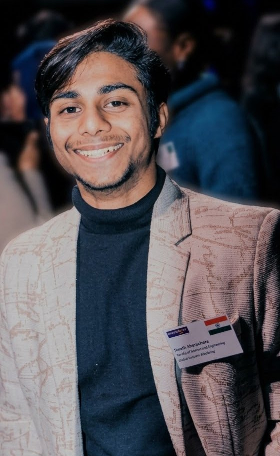

Swastik Bhattacharya
Co-founder
UCD Ad Astra PhD Scholar, selected to present at the Cambridge ELLIS Unit Summer School. Swastik works on ranking and preference models, clustering high-dimensional data and recommender systems, as well as Bayesian learning in multi-agent bandits.
At GranthAI he leads the recommendation and matching engine: ranking each child’s feed, clustering children by interests across schools and matching groups with mentors.